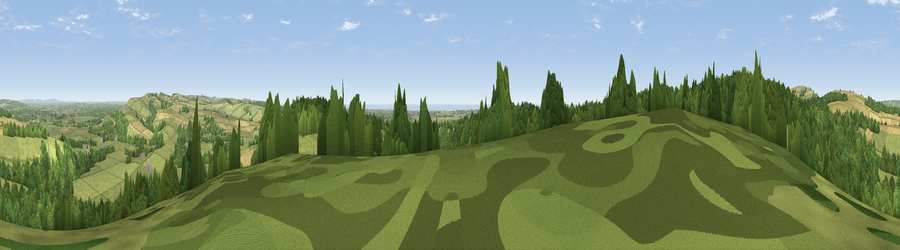

Viewpoint near Houghton
#10185 in England · top 27% of its area beats it · near HoughtonThe view, rendered

A 360° render of this exact spot computed from the terrain model, tree cover and land cover — summer colours, afternoon light, calibrated against photographs of famous viewpoints. Real trees, hedges and buildings will differ in detail.
The panorama
Grey silhouette: terrain skyline in each direction (720 bearings, Earth curvature and refraction included). Dashed green: skyline with trees (+15 m) and buildings (+8 m) as obstacles. Blue strip: how far the ground is visible on each bearing.
Where the view opens
Wedge length = distance to the farthest visible ground on that bearing (vegetation-aware). Rings at 10, 25 and 50 km.
What fills the view
47% grassland · 39% woodland · 10% cropland · 2% water · 1% built-up
Angular shares of the visible panorama (visual magnitude), not map area. Landscape diversity 0.48 (0–1 Shannon).
Key numbers
More beautiful places nearby
The staircase of upgrades: each row has a higher view potential than everything closer. Driving times are estimates from straight-line distance, calibrated against real road routing — check an actual route before setting out.
| Place | Direction | Drive | Score |
|---|---|---|---|
| Viewpoint near Houghton | NNW · 1 km | ~4 min | 65.4 |
| Viewpoint near Arundel | SE · 2 km | ~5 min | 65.9 |
| Viewpoint near Bury | NNW · 2 km | ~6 min | 69.1 |
| Westburton Hill | NNW · 3 km | ~8 min | 84.2 |
| Bignor Hill | NW · 4 km | ~10 min | 84.4 |
| Viewpoint near Washington | E · 13 km | ~23 min | 85.0 |
| Chanctonbury Ring | E · 13 km | ~24 min | 87.0 |
| Firle Beacon | E · 48 km | ~68 min | 88.9 |
50.88046, -0.56676 · source: screening · position refined by local search. Computed location — check access rights before visiting.